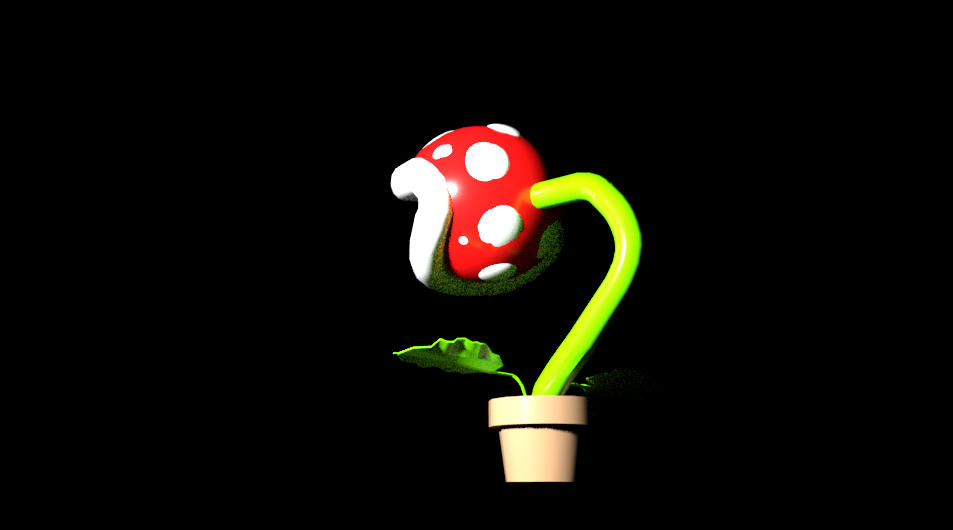
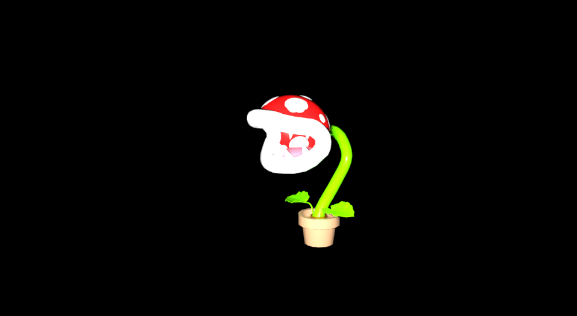

"Mario Plant""
8.1.20
Super mario always had these monster looking plants that would try to eat the player. It always gave me excitment when I saw these plants come out of the gorund and try to attack the players so I created a modle to see how it would look in 3D.